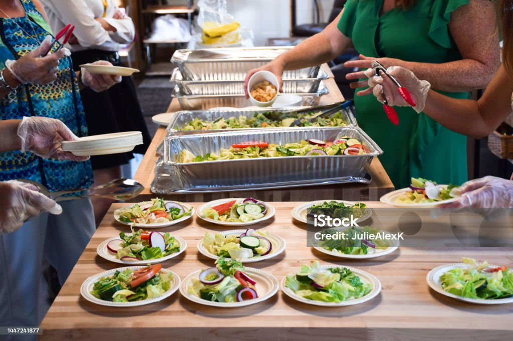
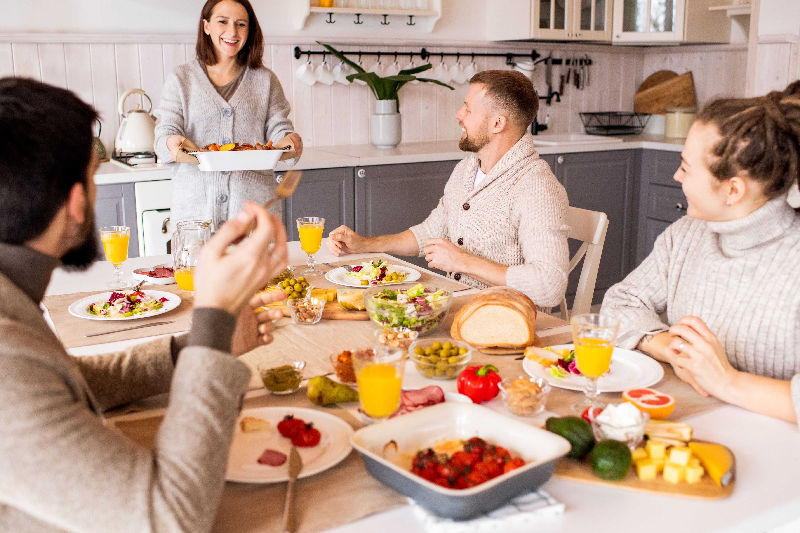
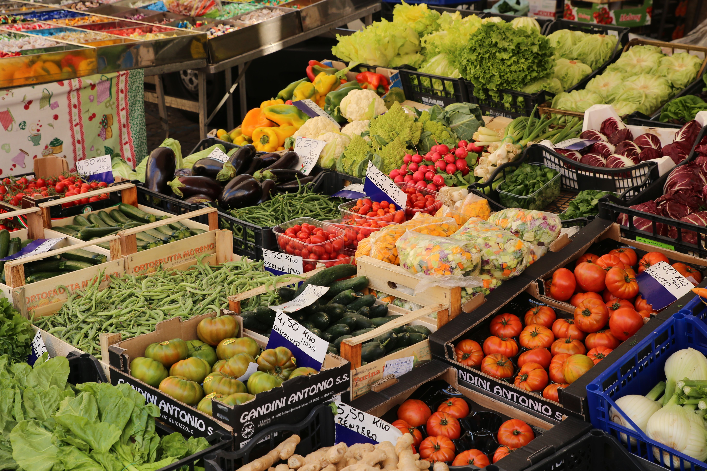

Mídias sobre Segurança Alimentar e Fome
Nesta página você encontrará imagens, um vídeo e um áudio relacionados à segurança alimentar, ao combate à fome, ao desperdício de alimentos e às iniciativas de solidariedade.
Galeria de Imagens

Fonte: Unsplash.
Licença: Unsplash License.

Fonte: Pexels.
Licença: Pexels License.

Fonte: Unsplash.
Licença: Unsplash License.

Fonte: Pixabay.
Licença: Pixabay Content License.

Fonte: Pexels.
Licença: Pexels License.

Fonte: Unsplash.
Licença: Unsplash License.
Vídeo
Fonte: YouTube.
Utilizado para fins educacionais.